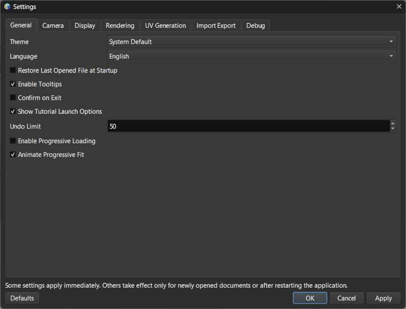

Lesson 13 of 14
Lesson 13: Performance Optimization
Introduction
Working with large models requires optimization strategies. Here's how to maintain smooth performance even with complex scenes.
Understanding Performance
Several factors affect rendering speed:
- Polygon Count: More polygons equal slower rendering.
- Display Mode: Realistic mode is significantly slower than Shaded or Wireframe.
- Number of Objects: High object counts increase system overhead.
- Texture Size: Large textures consume more memory and GPU bandwidth.
- Lighting Complexity: Shadows and Image-Based Lighting (IBL) are computationally expensive.
- Screen Resolution: Higher resolutions require more pixels to be computed.
Automatic Optimizations
ModelViewer includes built-in features to help manage performance:
Step 1: Low-Res Preview
For models larger than 50MB, a simplified version is automatically shown during navigation (rotation, panning, zooming). Full detail returns when movement stops.
Step 2: Progressive Loading
Large files load progressively, allowing you to begin working before the entire model is fully loaded.
Step 3: View Frustum Culling
Objects outside the camera's current field of view are not rendered, though they remain in memory.
Manual Optimization Strategies
Techniques you can use to improve responsiveness:
Step 1: Switch Display Modes
Use Shaded or Wireframe mode while modeling or transforming. Save Realistic mode for final reviews.
Performance ranking (Fastest to Slowest): Wireframe > Shaded > WireShaded > Realistic.
Performance ranking (Fastest to Slowest): Wireframe > Shaded > WireShaded > Realistic.
Step 2: Hide Unnecessary Objects
Hide objects you aren't currently working on. Hidden objects aren't rendered, freeing GPU resources. Use 'Show Only' to isolate components in large assemblies.
Step 3: Reduce Shadow Quality
In Environment settings, lower Shadow Quality (Ultra → High → Medium → Low) or disable shadows entirely during heavy work.
Step 4: Disable IBL/Reflections
Turn off Image-Based Lighting and environment reflections when they aren't strictly needed for the current task.
Step 5: Use Orthographic Projection
Orthographic projection is slightly faster than perspective, making it ideal for technical work.
Settings Optimization
Configure global rendering quality:
Step 1: MSAA Level
In File → Settings → Rendering, lower MSAA (anti-aliasing) samples (8x → 4x → 2x → Off) if the framerate is poor.
Step 2: Anisotropic Filtering
Reduce the filtering level (16x → 8x → 4x → 2x) to lower texture processing load.

Settings dialog showing rendering quality optionsWorking with Large Files
Strategies for massive models:
- Import Selectively: If possible, import only the specific parts you need.
- Use Low-Poly Versions: Maintain separate low-poly versions for active modeling work.
- Work in Sections: Use clipping planes to focus on and render only one area at a time.
- Wait for Load: Let files load completely before initiating heavy interaction.
- Close Unused Sessions: Every open viewer window consumes system resources.
Memory Management
Monitor and manage system resources:
Step 1: Memory Indicators
Monitor the status bar for memory usage warnings.
Step 2: Delete Unused Objects
Permanently delete objects you don't need rather than just hiding them, as hidden objects still occupy RAM and VRAM.
Step 3: Texture Sizes
Use appropriately sized textures; 4K textures are often unnecessary for small objects. Consider 2K or 1K textures for better performance.
Performance Checklist
If experiencing slowdown, try these in order:
- Switch to Shaded or Wireframe display mode.
- Hide objects not currently needed.
- Disable shadows temporarily.
- Turn off IBL and environment maps.
- Lower MSAA setting in Settings.
- Use Orthographic projection.
- Close unnecessary viewer sessions.
- Reduce texture sizes.
- Consider working with a lower-poly version.
For extreme cases (over 100 million polygons), consider splitting the model into separate files or using dedicated CAD software for the heaviest geometry work.